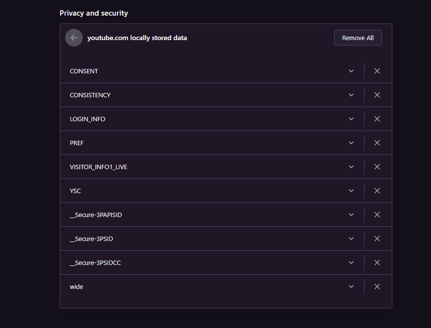

Vznik WWW a principy
World Wide Web (WWW, také pouze zkráceně web), ve volném překladu „celosvětová pavučina“, je označení pro aplikace internetového protokolu HTTP. Je tím myšlena soustava propojených hypertextových dokumentů. Služba se zrodila se v roce 1989 v evropském vědeckém centru CERN v Ženevě díky Timu Berners-Lee. Za hypertext označujeme takový text, který obsahuje propojení na jiné texty pomocí tzv. hypertextových odkazů. Ve službě WWW jsou realizovány jako tzv. URL odkazy. Služba je založena na spolupráci WWW klientů (browserů) s WWW serverem. Prvním komerčním prohlížečem webových stránek byl na počátku 90. let minulého století Mosaic. Při jejich spolupráci fungují následující mechanismy: komunikační protokol HTTP, pomocí něhož WWW klient a WWW server komunikují, jazyk HTML (HyperText Markup Language), definující formát WWW stránek, které server vrací klientovi. World Wide Web Consortium (W3C) je mezinárodní konsorcium jehož členové společně s veřejností vyvíjejí webové standardy pro WWW. Konsorciu předsedá Tim Berners-Lee.
WWW - Otázky a odpovědi
Server je bezobslušný program, který příjmá a obsluhuje požadavky klientů. Webový server je připojen k počítačové síti a příjmá požadavky v souladu s protokolem HTTP (HTTP Request). Tyto požadavky vyřizuje a počítači, který požadavek vznesl, vrací odpověď.
Příklady webových serverů
- Apache
- NGINX
- Microsoft Internet Information Server
Klient (browser, prohlížeč) je program, který komunikuje s uživatelem a na základě jeho pokynů se obrací na jednotlivé servery. Získává od nich data a zobrazuje je.
Příklady webových klientů
- Google Chrome
- Safari
- Mozzila Firefox
- Opera
Základem služby WWW je komunikace mezi webovým klientem a webovým serverem pomocí protokolu HTML. Při jejich spolupráci fungují dva nechanismy:
- komunikační protokol HTTP, pomocí něhož WWW klient a WWW server komunikují
- jazyk HTML, definující formát WWW stránek, které server vrací klientovi
HTTP (HyperText Transfer Protocol) je jednoduchý aplikační protokol s komunikací charakteru požadavek – odpověď. Žádosti mají formu jednoduchých příkazů a mohou být upřesňovány pomocí různých parametrů, tzv. hlaviček. Odpovědi mají číselný charakter a nejčastěji obsahují i WWW stránku, kterou klient požadoval.
| Kód | Typ zprávy |
|---|---|
| 1.. | informační zpráva |
| 2.. | úspěšné vyřízení požadavku |
| 3.. | problémy spojené s přesměrováním |
| 4.. | chyby související s vyřízením požadavku (stránka není dostupná, apod.) |
| 5.. | interní chyby serveru |
HTTPS (Hypertext Transfer Protocol Secure = HTTP se zabezpečením) je nadstavba protokolu HTTP, která poskytuje zvýšenou bezpečnost před odposloucháváním či podvržením dat. Pro komunikaci pomocí HTTPS musí nejdříve server vlastnit certifikát. Certifikát musí být podepsán tzv. certifikační autoritou, která zaručí, že vlastník certifikátu se nevydává za nikoho jiného. Webové prohlížeče jsou většinou vybaveny podpisovými certifikáty největších podpisových autorit.
Výhody HTTPS
- Možnost ověření identity
- Integrita obsahu
- Důvěrnost přenášených dat
URL (Uniform Resource Locator) je řetězec znaků s definovanou strukturou, který slouží k přesné specifikaci umístění zdrojů informací (ve smyslu dokument nebo služba) na Internetu. URL definuje doménovou adresu serveru, umístění zdroje na serveru a protokol, kterým je možné zdroj zpřístupnit.
Příklady internetových odkazů
- https://cs.wikipedia.org/wiki/Hlavní_strana
- https://www.youtube.com
- https://www.microsoft.com/cs-cz
- https://www.bmw.cz/cs/index.html
- https://www.czc.cz/?gclid=Cj0KCQjwrsGCBhD1ARIsALILBYo7Qatb6wMwZvkwRMamGGKoQNMiWjIM5fOVEMazOLm0v3CSyxXp0oEaAterEALw_wcB&gclsrc=aw.ds
Jako cookie (anglicky koláček, oplatka, sušenka) se v protokolu HTTP označuje malé množství dat, která WWW server pošle prohlížeči a ten je uloží na počítači uživatele. Při každé další návštěvě téhož serveru pak prohlížeč tato data posílá zpět serveru. Cookies běžně slouží k rozlišování jednotlivých uživatelů, ukládá se do nich obsah „nákupního košíku“ v elektronických obchodech, uživatelské předvolby apod.

Fáze fungování internetových vyhledávačů
- Prohledání webových stránek. Pro prohledání webových stránek má internetový vyhledávač automatický program, tzv. vyhledávací robot (crawler, bot, nebo též spider – „pavouk“), který prochází celý webový prostor. Robot dostane na začátku seznam atraktivních vstupních míst (odkazů), jejichž obsah si přečte, uloží do databáze a zapamatuje si navštívenou adresu odkazu, aby se na ni již podruhé nevracel. Z obsahu stažené stránky vybere seznam všech obsažených odkazů a opět všechny odkazy navštíví. Cyklus návštěvy, sesbírání odkazů a dalších návštěv se stále opakuje. Robot se na navštívené stránky vrací v pravidelných intervalech, aby zjistil, zda se na stránce neobjevily nějaké nové informace. Z principu práce vyhledávače vyplývá, že nikdy nemá úplně aktuální informace, ale prezentuje je se zpožděním.
- Indexování. Databázi obsahující uložené obsahy navštívených stránek je potřeba indexovat, aby bylo možné podle zadaných slov co nejrychleji najít adresy stránek, které je obsahují. Zároveň je nutné vystavět index tak, aby poskytoval na prvních místech stránky s nejvyšší užitnou hodnotou (relevancí, mající nejvyšší hodnocení kvality, nejvyšší váhu). Pro výpočet relevance se používají nejrůznější algoritmy, které jsou založeny na nejrůznějších znacích stránek a různých úhlech analýzy jejich obsahu:
- Váha slov. Stránka má vyšší hodnocení, když má hledané slovo na stránce vyšší váhu. Váha slov se zvyšuje, je-li slovo v titulku stránky, nadpisu nebo blíže k začátku stránky, případně se na stránce opakuje. Váhu slov lze zneužít vkládáním atraktivních slov do obsahu stránky bez ohledu na její skutečný obsah nebo prostým opakováním slov. Vyhledávač se brání penalizací (snížením kvality) podezřelých stránek.
- Atraktivita stránky. Stránka má vyšší hodnocení, když na ni odkazuje více jiných stránek, protože zřejmě obsahuje zajímavé informace. Atraktivitu lze zneužít vytvářením falešných stránek, které odkazují na stránku, která má získat vyšší hodnocení. Vyhledávač se brání sledováním podezřelého náhlého hromadění odkazů.
- Serióznost webu. Webové servery, které obsahují velké množství kvalitních stránek, jsou při výpočtu váhy zvýhodněny. Seznam se může udržovat i ručními zásahy.
- Sponzorované odkazy. Váha odkazu se zvyšuje zaplacením poplatku. Seriózní vyhledávače se této praxi vyhýbají nebo zřetelně oddělují výsledky zobrazené na základě komerčního zvýhodnění. Tento způsob je jedním z možných zdrojů příjmů vyhledávače.
- Technická kvalita. Váha odkazu se zvyšuje, pokud jsou stránky správně sestaveny a vyhovují webovým standardům.
- Vyhledávání. Databáze a její index se zpřístupní na vstupní stránce vyhledávače. Uživatel získá po zadání hledaných slov seznam adres, na kterých robot hledaná slova našel. Pro vyšší přehlednost se zobrazuje kromě odkazu ještě titulek stránky, a okolí nalezených slov.
Html a hypertext
- Hypertext Markup Language (zkratka HTML) je v informatice název značkovacího jazyka používaného pro tvorbu webových stránek, které jsou propojeny hypertextovými odkazy. HTML je hlavním z jazyků pro vytváření stránek v systému World Wide Web, který umožňuje publikaci dokumentů na Internetu.
- Hypertext je způsob strukturování textu, který není lineární. Obsahuje tzv. hyperlinky neboli česky (hypertextové) odkazy. Rovněž odkazuje i na jiné informace v systému a umožňuje snadné publikování, údržbu a vyhledávání těchto informací. Nejznámějším takovým systémem je World Wide Web.